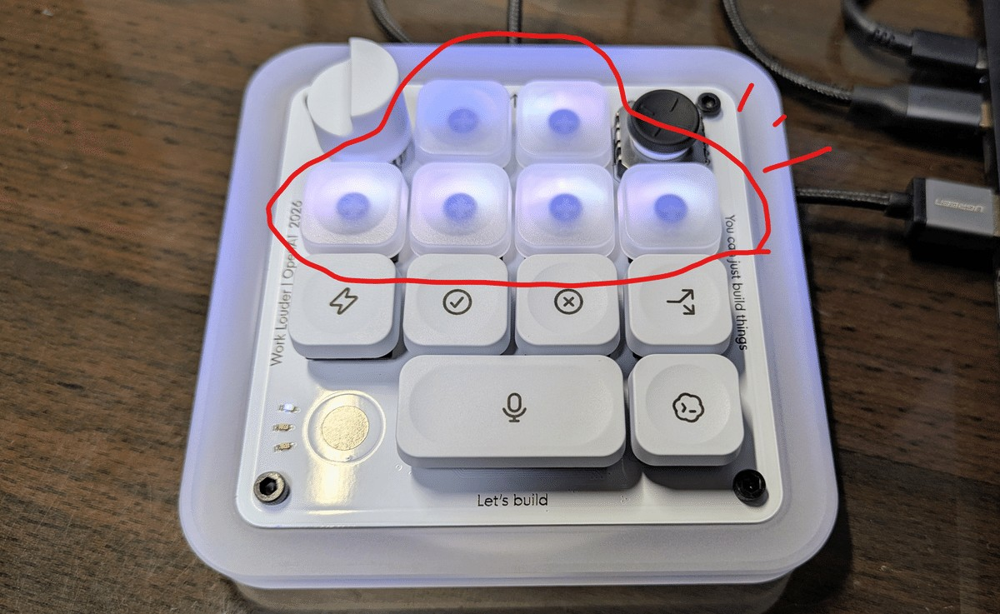
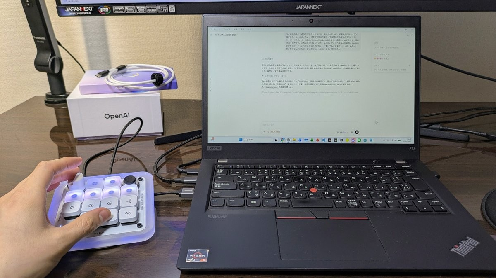
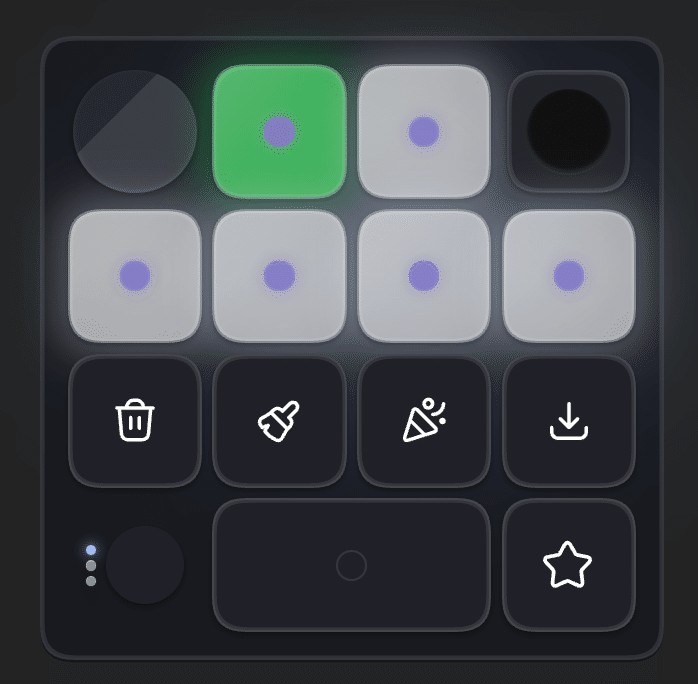
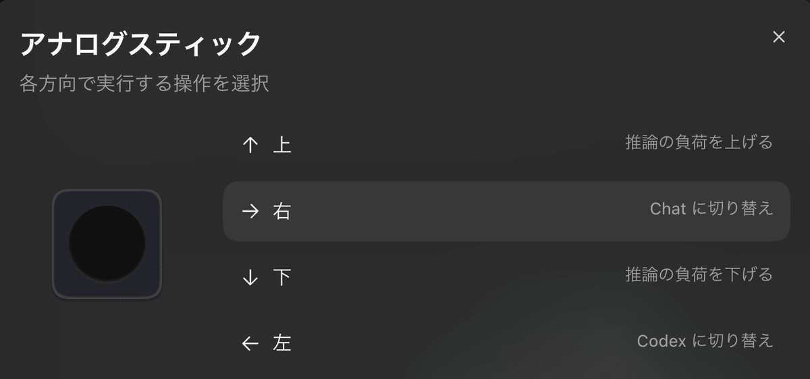

Codex Micro: Full Evidence from Ten Actual Users
Status lights, six thread slots, voice, dial, joystick and custom skills: concrete workflows, used and unused controls, connection failures and purchase/gift disclosures across ten users.

Research cutoff: 2026-10-06. This report covers only the OpenAI × Work Louder Codex Micro (kbd-1.0-codex-micro). Reviews of Codex software shortcuts, the older Creator Micro, the DIY Agent Micro, and phone-based replicas are not treated as reviews of this device.
Key Takeaways
Codex Micro is a closely related product worth examining in depth: it brings the sequence of “notice a background task's status → find the corresponding thread → enter the next instruction” onto a dedicated control surface beside the computer. The most persuasive examples are not the promotional idea of “turning a dial to adjust intelligence.” They are multitasking users seeing a green light and immediately returning to the relevant thread, holding a button to speak, and turning repeated instructions into muscle memory.
The feedback also points to a more specific opportunity: a phone used as a second screen could show thread names, next actions, context, and the details of confirmations, reducing the burden of remembering fixed key assignments. This remains a product hypothesis. There is no evidence here that a phone-based approach is better than physical buttons, and no reliable controlled comparison was found that quantifies how much time Micro saves.
1. Sample Boundaries: Launch-Day Mockery Is Not a Measure of User Satisfaction
The main sample brings together first-person usage feedback from 10 distinct authors or accounts: seven self-reported buyers or owners, two users who explicitly disclosed receiving a free device, and one reviewer with a hands-on video whose purchase, loan, or gift relationship was not disclosed. Two additional leads, a brief arrival-video post and a hands-on reverse-engineering report, are listed separately and are not included in the main sample.
This is a convenience sample of people who posted publicly and were discoverable through search, not a random sample. Not all purchase claims could be independently verified. The sample cannot establish satisfaction rates, failure rates, or what “most users” think. SithLordZX discussed two devices across two posts but counts as one person. Creator Micro 2 users, Hacker News commenters who had not bought the device, and prototype developers are treated separately. The longest explicitly described usage period was approximately one month to five weeks; no substantial body of verifiable long-term follow-up was found.
2. Official Facts and How the Device Actually Works
Product Identity and Timeline
OpenAI's official update identifies the launch date as 2026-07-15 and describes a limited-edition collaboration. Some customers had received their devices in July. No single, confirmed “first shipment date” was found, so the launch date should not be equated with the shipping date for every order. Checks on 2026-10-06 showed both stores listing the device as sold out or out of stock. OpenAI's listed price was $230. Official launch record · OpenAI product page
The hardware has 13 mechanical switches, one touch sensor, one rotary encoder, and one flat joystick. It supports USB-C and Bluetooth, and the official compatibility list names Mac and Windows. Six translucent Agent keys display task status. The other controls cover voice input, sending, approval, rejection, Fast mode, and branching. The wide Mic key spans two switches, so the number of visible keycaps should not be equated with the number of switches. This is not a computer that runs models independently. It has neither an onboard screen nor a built-in microphone. OpenAI product page · Official user guide
Four Misconceptions to Correct
- The dial is not a fixed “model switcher.” Its current default is navigation in the input area. Alternative modes include adjusting reasoning only, scrolling through conversations, and custom behavior. Model selection, reasoning effort, and Fast mode are separate parameters; promotional language about “adjusting brainpower” should not collapse them into a single capability.
- Users do not always need to focus the app with the mouse first. Double-pressing a thread key can bring the window to the foreground; single-press focus can now also be configured. The default assignment is the six most recent threads, with alternatives including fixed or priority-based assignments.
- Voice input has a clear submission boundary. Hold the button to record, or double-press for hands-free recording. Audio comes from the computer's microphone, and the Send key is still pressed after the recording has been processed. The physical Mic key does not contain a microphone.
- The mappings are not completely locked down. Actions and skills can be configured within Codex, while Work Louder Input supports other apps and additional layers. However, support for general-purpose shortcuts does not imply native status integration with third-party agents. Official user guide · Work Louder product page
Connectivity introduces another mental burden: there are three Bluetooth channels plus a wired mode. The two companies' current documentation conflicts on whether plugging in a USB cable automatically switches the device from Bluetooth to wired mode. OpenAI says the cable only charges the device and does not switch the mode automatically; Work Louder says it does switch automatically. Neither account should be presented as an absolute behavior across all firmware versions. Check the actual connection mode. macOS Input Monitoring permissions and conflicts with keyboard utilities may also require troubleshooting. OpenAI guide · Work Louder setup instructions
Physical Device and Actual Working Interfaces
Six Agent keys outlined by the original author. Physical device photographed by Moritomo on 2026-08-02; OpenAI supplied it free. Keycaps show the photographed layout, not fixed mappings. Source.

Moritomo uses the voice key and scrolling while reading the computer screen. Gifted device, 2026-08-02; the photograph does not demonstrate a measured efficiency gain. Source.

Martin’s actual customized app layout after about five weeks. Self-reported buyer, 2026-09-05; custom skills replace default confirmation/rejection mappings. Source.

Martin’s actual joystick settings: up/down adjust reasoning, right switches to Chat, left to Codex. Self-reported buyer, 2026-09-05. Source.
3. User Cases: Actual Workflows and the Controls People Really Use
A. Martin: Still Using It Daily After About Five Weeks, Including on Business Trips
- Evidence: A September 5 article cites the author's July 30 arrival photograph and includes actual settings screenshots. The author reports buying the device; no gift disclosure was found
- Workflow: Plan first, then use frequently used skills to move the work forward. When a completion light turns green, return to the thread and add the next instruction. While working in Chrome, double-press to bring Codex back to the foreground
- Actual layout: Keys are assigned to execute a plan, confirm the next step, conduct deeper research, and record the conversation. The joystick adjusts reasoning up and down and switches between ChatGPT and Codex left and right
- Counterintuitive detail: The author says they do not rotate the dial left or right and find that its steps sometimes slip. The screenshot still shows it mapped to the previous and next recent chats, so “unused” does not mean “unassigned.” Pressing the dial was remapped to Fast mode. The lasting value is primarily awareness of task status, rather than a larger set of shortcuts
- Evidence strength: A relatively strong first-person example of sustained use, without objective efficiency measurements
B. Atlesque: Several Weeks of Work Use, Recommended for Multitasking and Voice Users
- Evidence: An August 4 Reddit post discusses the silent-switch version, European shipping and taxes, and sleep behavior. The purchase context is clear, with no gift disclosure
- Likes: Convenient thread switching and status lights that flag tasks awaiting review. The dedicated Mic key increased the author's use of voice, except in offices and public places. Pairing was quick, and build quality and battery life felt good
- Unused controls and friction: The author still uses the mouse for advanced model selection, rarely uses the dial, and finds the joystick too stiff to use at all. The silent switches are not as quiet as expected. The device sometimes gets stuck after waking from sleep, requiring a manual thread switch
- Who it suits: The author sees little reason to buy it for people who run only one task at a time or dislike speaking to their computer
C. veg-n: One Week with a Self-Funded Device, and Many Controls Never Became Part of the Workflow
- Evidence: On July 28, the author explicitly said they paid for the device. Although they had long participated in an Amazon product-review program that lets reviewers keep products, they stated that this device was not part of that program
- Gap between expectations and use: Approval, rejection, branching, and similar controls were barely used. The dial's scrolling direction differed from the author's mouse setup. The joystick required remembering directions and raised concerns about accidental activation. Voice input triggered an unwanted Voice mode, and the author could not use Wispr Flow as intended
- Reliability experience: Short sleep intervals, status lights falling out of sync, and a power button near the connector that was hard to reach. A comment also reported HID WRITE_FAILED
- Important corrections: The author believed they had to use the mouse to return to the app first and could not use the device while charging. In the same thread, willwang-openai pointed out double-press focus and the ability to leave USB connected while using it. The username suggests a possible OpenAI connection, but the person's identity was not verified, so this cannot be called an official response. Separately, anomaly256 said the device worked again after permissions were granted
- Interpretation: The unsuccessful experience is valid evidence to record. An operation the user did not know about, or could not get working at the time, should not be treated as something the hardware can never support
D. SithLordZX: Two Unresponsive Devices, Followed by a Refund Request
- Evidence: The August 8 main post and comments on Atlesque's review come from the same account. The author reports buying two devices, reproducing the problem on different computers, and finding that updates and resets did not help
- Experience: No input response and no usable functionality. A device in that state cannot be used to assess multitasking benefits. The author ultimately said they were pursuing a refund
- Counterevidence retained: In the same discussion, Icy_Ad4276 said their device worked after diagnostics and an update. PoisonSD said their device worked in daily use, but it was a Creator Micro 2, so that comment cannot count as a separate successful Codex Micro case
- Interpretation: This establishes at least one serious individual case. It does not support a claim that an entire batch is defective or provide a basis for calculating a failure rate
E. Aditya Bawankule: Bought It to Reverse-Engineer It, with a Strong Focus on Connecting Existing Tools
- Evidence: A first-person LinkedIn post explicitly states that the author bought the device. The page displayed only a relative date, not a reliable exact date; the post was published before the research cutoff
- Complaints: The rear pairing button was difficult to reach with USB plugged in. The author could not find ordinary key mappings in Codex settings or create the desired Wispr Flow key. Friction in the joystick and a cap that rotated on its own contributed to a sense that the device was not worth the price
- Boundary: These comments describe the settings experience within Codex. They should not be restated as proof that the hardware cannot be remapped at all. Current official documentation provides a route for other apps and layers
- Implication: Heavy voice users may be unwilling to change their existing voice engine. An input device should allow them to keep their established pipeline
F. G9X: Even a Heavy Voice User May Find It Unconvincing
- Evidence: A July 27 post reports regret after buying the device. The author also created a browser-based 3D replica and has an incentive to promote that open-source project
- Experience: The author initially expected the device to be a good fit because of heavy voice use, but found it unhelpful and considered reselling it
- Evidence weakness: The post does not clearly describe the failed actions, configuration, or number of days of use. It cannot establish that a particular feature is broken. It only shows that enjoying voice input does not guarantee enthusiasm for a dedicated device
G. tta82: Likes It and Has No Regrets, but Sees Gaps Across Tools and Computers
- Evidence: A direct comment about the purchase experience in Atlesque's thread. The length of use is unspecified
- Experience: The author likes the device overall and does not regret the purchase. They want to use it with Claude and find the online workarounds unsatisfactory. In their multi-Mac setup, touch-based device switching is not always reliable
- Boundary: This is a short comment without reproduction logs. It does not establish that switching between Macs fails for everyone. It is on the same source page as Atlesque's review and should not be presented as another standalone review article
H. もりとも: A Gifted Device and a First-Day Discovery of “Speak While Scrolling Through Earlier Output”
- Evidence: The August 2 article explicitly discloses that OpenAI supplied the device free of charge. It includes photographs of the actual device and its use at a desk. This is a first-day account, not evidence of long-term retention
- Tasks: Fixing code for cultivation experiments, organizing records, and writing articles. The author runs multiple chats in parallel while also using Chrome
- Actual actions: Use the Mic key with the left hand to dictate the next instruction while turning the dial to scroll back through context. The author usually keeps reasoning effort fixed, so the dial was reassigned to scrolling
- Negatives: The initial reaction was that a mouse was sufficient. The dial behavior shown in promotion differed from its actual default navigation behavior. A mouse remained faster for a single thread, precise text selection, and settings pages. Approval and branching were not used often
I. Yangshun Tay: One Week with a Gifted Device, Attractive but Only a Modest Improvement
- Evidence: The author explicitly thanks OpenAI's Gabriel Chua for the gift. Although the author says the post is “not sponsored,” the device should still be labeled as gifted rather than described as having no relevant relationship. The page does not provide a reliable absolute date
- Most-used features: Navigation among recent threads and status backlighting. The author personally mapped the dial to reasoning effort
- Assessment: The physical build is good and the device is customizable. However, Codex already had solid keyboard support, and the author also used a Magic Trackpad. The additional convenience therefore felt more like a “vitamin” than a tool addressing an essential need
J. Curtis Pyke / Kingy AI: Parallel Writing, Research, and Editing Can Exceed Six Slots
- Evidence: An August 3 hands-on article and video. The article acknowledges that the purchase, loan, or gift relationship, operating system, and firmware version were not disclosed. The video shows wired use
- Tasks: Parallel research, writing, and editing. The author says they may have around 20 agents running. The six lights serve priority tasks rather than acting as a complete monitoring console
- Core experience: Glancing at status and returning to threads with a single or double press matter most. Icons and mappings still need to be learned. Bluetooth range, latency, and battery life were not measured and should not be counted as having passed testing
- Weight: A commercial review with concrete operational context. The relationship with the brand is unknown, so this is not equivalent to an ordinary self-funded user account
4. Useful Leads Outside the Main Sample
- oxeneers' arrival-video post: The title says the author loves the device so far but wishes it had a microphone. This supports self-reported possession, but the accessible text lacks sufficient usage detail for inclusion in the main sample. Original post
- Arthur Colle's hands-on reverse engineering: Documents bidirectional USB/BLE HID, events, and light control in v0.4.1, along with a self-built voice-dispatch implementation. This is an engineering experiment, not a guarantee of factory functionality or an ordinary purchase recommendation. The custom multi-agent console must not be described as available out of the box. Technical report
- Hacker News launch discussion: Many comments address price, Linux, screens, and “why not make this a phone app,” mixed with experiences of other Work Louder products. No long-term Codex Micro owner suitable for inclusion was verified in this review. The discussion is useful for studying expectations and positioning, not for summarizing satisfaction. Discussion
- CNET month-long review lead: Search surfaced an original article about Katelyn Chedraoui's month of use and a CNET social post dated October 1. Access to the original article was restricted, and not enough of the full text was available. No secondhand details are developed from it here. Original article
- YouTube: Raúl Marín's 27:14 Spanish-language unboxing and review has identifiable sections at 04:44 for unboxing, 08:06 for configuration, and 11:43 for live voice use. The complete footage and comments have not been verified, so no conclusions are inferred from the title alone. Video
- Manufacturer video: A demonstration by a Work Louder cofounder shows the controls in use. It is a manufacturer demo, not an independent user review. Video
5. Changes over Time: Early Problems Are Not Automatically Current Conclusions
The current official guide includes single-press focus, connection-conflict troubleshooting, and several dial modes. Work Louder's September firmware release notes discuss improvements to the battery, Bluetooth, keys, and mode restoration, and the release page also contains prerelease versions. The release notes show that the manufacturer is addressing these categories of issues. They do not prove that the individual user cases above have been resolved, and they do not justify recommending the same firmware indiscriminately to everyone. No hardware retesting was performed for this report. Firmware release notes
A Windows community report also described a native-module crash in a particular July 15 desktop version. It concerns loading an optional device integration; the person reporting it may not have owned the device. It is therefore not counted as a Micro hardware failure. Version-specific report
6. Design Implications for Companion Input Devices: Research Inferences, Not Validated Results
What Is Worth Keeping
- Keep status and action together. The same task card should show status and return the user to the corresponding context. Buttons alone or notifications alone are incomplete
- Retain a small number of stable slots. Muscle memory and peripheral awareness have value. Positions should not constantly change in the name of making the interface “intelligent”
- Keep voice input within easy reach. Offer push-to-talk and hands-free modes, with clear recording, transcription, and ready-to-send states. Keep sending separate from recording
- Turn common intentions into executable actions. Continuing a plan, checking the next step, explaining an error, and adding tests are more promising experiments than a preset row of rarely used controls
Opportunities for a Phone Screen to Offer Something Different
- Show the thread name, project, reason it is waiting, and a summary of the last output, reducing the need to remember which light represents which task
- Offer two or three understandable next steps based on the current task while keeping frequently used controls fixed. Dynamic suggestions should not displace stable actions
- Show the action, impact, target, and diff on an approval card before confirmation. A green physical button should not turn review into a blind button press
- Display the model name, reasoning level, and Fast mode separately. Do not require users to remember the current value from an unmarked dial
- Let users choose their own dictation tool or reuse their phone microphone, while making the audio destination and authorization explicit
- Show connection status, disconnection, reconnection, and whether a command executed. Avoid a blank screen or dark light ambiguously meaning “no task,” “asleep,” or “disconnected”
Tradeoffs That Must Be Tested
A phone lacks mechanical tactile feedback, so users may have to look down. An additional screen competes for attention. Lock screens, heat, battery drain, local-network connectivity, and permissions can introduce new friction. Avoid treating the ability to skip a $230 hardware purchase as proof of a better workflow.
A useful next study would be a crossover experiment using the same tasks across three conditions: a keyboard-and-mouse baseline, fixed phone controls, and phone controls with contextual suggestions. Test both single-task work and three to six parallel tasks. Record time to return to the correct thread, repeated status checks, accidental command submissions and undo actions, time spent correcting voice input, instances of moving a hand away from the keyboard, and voluntary usage frequency in the second week. First validate the loop from status to the correct action, then test whether dynamic controls add value.